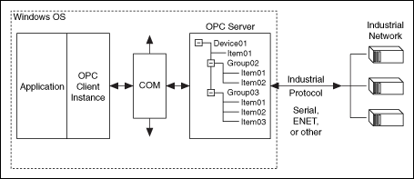

OLE for Process Control (OPC) is a set of standard interfaces developed to ensure interoperability among control devices from different manufacturers for the transfer of real-time plant data. The OPC Foundation�comprised of representatives from manufacturers of control systems, instrumentation systems, and process control systems�oversees the development and maintenance of the OPC specifications.
The OPC Foundation developed the OPC specifications so you can use devices from more than one manufacturer and interchange devices throughout a plant without having to change the code that communicates with those devices. These specifications also help you control processes and collect data in the plant and then transfer and use that data enterprise-wide.
The OPC Foundation currently maintains eight OPC specifications:
|
Note��LabVIEW supports the OPC Data Access specification. You can connect to the LabVIEW OPC server from third-party OPC clients. You also can develop OPC clients in LabVIEW to connect to other OPC servers. |
|
Note��The LabVIEW OPC UA Toolkit supports the OPC UA specification. You can use the OPC UA VIs to create OPC UA server or OPC UA client applications. |
The OPC Foundation has released three major versions of the OPC specification. LabVIEW currently supports the following versions of the OPC DA Specification:
Refer to the OPC Foundation website for more information about the OPC specifications.
For a local OPC system, you install both the OPC server and the OPC client on the same computer running Windows.
As shown in the following illustration, a plant contains an industrial network of control devices that communicates with the OPC server using an industrial protocol such as serial or ENET.

When the OPC server receives data from the industrial network, the OPC server translates the data into a standard OPC format and makes the data accessible to OPC clients. The OPC clients can read the data or write new data to the devices through the OPC server. The OPC server organizes data into groups and items and exposes the data through a standard interface. Groups allow the OPC client to organize data and make group-level requests for update notifications. Items provide information about the data that the OPC server publishes.
The OPC server implements several interfaces that depend on COM, a Windows-based technology, to exchange data with OPC servers. This is the reason OPC is available only on Windows platforms. When an OPC client connects to an OPC server, the client specifies which data items to subscribe to and how often to receive updates.
For a remote OPC system, you install the OPC server and the OPC client on different computers. Both computers must run Windows, and you must connect the computers using Ethernet.
You must properly configure DCOM settings on the OPC server to make an OPC server/client system operate properly. DCOM restricts the access rights to specific computers on a domain, and security preferences can prevent OPC clients from communicating with remote OPC servers. Therefore, local OPC is often easier to configure than remote OPC.
You also must configure many Windows settings, such as security, firewalls, and the OPC server and OPC client software. Refer to the Windows Help and Support Center for information about configuring security, DCOM, and firewalls on Windows. Refer to the documentation for the OPC server and OPC client software for information about configuring the OPC server and client.
Configure the settings in the following order for best results: